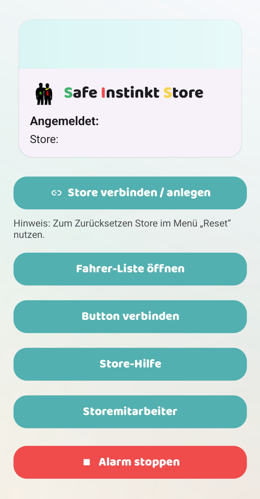

Safe Instinkt – Store App – Alarmzentrale & Koordination im Standort
Die Store App ist das Gegenstück zur Driver App: Sie ist die zentrale Oberfläche im Store/Standort, die SOS-Meldungen sichtbar macht, Abläufe bündelt und Zuständigkeiten klar regelt. Fokus: wenige Klicks, klare Zustände, keine Diskussion im Stress.

Store-Funktionen (B2B)
- Store verbinden / anlegen (Standort-Zuordnung)
- Fahrer-Liste (Überblick & Status)
- Button verbinden (Hardware-Integration)
- Store-Hilfe (interner Alarm/Support-Flow)
- Alarm stoppen (klarer Abschluss im Ablauf)
Wozu die Store App?
In echten Betrieben zählt nicht „irgendeine Benachrichtigung“, sondern ein definierter Prozess. Die Store App sorgt dafür, dass Alarme nicht untergehen und dass klar ist, wer zuständig ist.
Ideal für Kettenbetriebe und Franchise-Strukturen: mehrere Standorte, wechselnde Teams, aber ein einheitlicher Ablauf.
Typischer Ablauf
- Store zuordnen (einmalig / bei Wechsel)
- Fahrer-Übersicht im Blick behalten
- Alarmannahme bei SOS / Store-Hilfe
- Reaktion: Rückruf, Koordination, Eskalation nach Bedarf
- Alarm stoppen (Ablauf sauber schließen)
Warum das wichtig ist
- Weniger Fehlalarme durch klare Zustände
- Standort-Zuordnung verhindert „Alarm im falschen Store“
- Einführung einfacher: Oberfläche ist bewusst reduziert